6.5 重构：在项目中使用 SQLite
在上一讲“数据库正传--SQL与SQLite”中，我们系统学习了关系型数据库的基础理论、SQLite 的极简设计哲学、DDL/DML 语法规范、事务控制，以及使用参数化查询防御 SQL 注入的工业级标准。
然而，截至目前，我们的 ZeroTech 文本分析系统依然在使用老旧的 history.json 文件方案维护历史记录。本讲的目标是将 ZeroTech 的存储层进行彻底现代化改造：将底层物理存储平滑迁移至 SQLite 数据库，同时确保对外 HTTP API 契约与前端交互 100% 保持不变。
在动手编写 SQL 之前，我们将首先对后端的架构职责进行严格审视，遵循软件工程中“重构（Refactoring）”的黄金准则，采用“先搬家、后装修”的两阶段工程策略，将混杂在 main.py 中的接口层、业务层与存储层清晰剥离，为后续换库乃至未来架构演进筑牢坚实的边界。
目录
- 审视现有架构：
main.py的职责混杂痛点 - 重构的核心法则与“先搬家后装修”策略
- 第一阶段（搬家）：抽离
storage.py存储模块 - 深化架构边界：
LIMIT分页截断的决定权归属 - 第二阶段（装修）：
storage.py全面接入 SQLite main.py接入初始化与系统全链路联调- 生产级工程规范：数据不进 Git 与老资产清理
- 架构拓展视野：ORM（对象关系映射）核心机理
- 高频查询优化：在代码中声明式创建索引
- 总结与下一阶段演进：会话与状态隔离
一、审视现有架构：main.py 的职责混杂痛点
(参考时间: 00:00 - 03:00)
打开我们当前的 backend/main.py，虽然文件仅有几十行代码，但仔细梳理会发现它同时承担了三种完全不同的系统职责：
graph TD
subgraph 单一文件 main.py 内混杂的三种职责
R1["接口层 (Presentation/API Layer)<br/>• @app.get('/api/history')<br/>• @app.post('/api/analyze')<br/>• 负责 HTTP 协议解析与状态码响应"]
R2["业务层 (Business/Domain Layer)<br/>• SnowNLP 情感倾向打分<br/>• pypinyin 多音字与拼音生成<br/>• 组装业务分析报告字典"]
R3["存储层 (Persistence/Storage Layer)<br/>• history.json 磁盘路径常量<br/>• json.load() 全量读取与解析<br/>• records[::-1][:10] 内存倒序切片<br/>• json.dump() 全量落盘覆写"]
end
在功能原型阶段，几行读写文件的逻辑顺手写在路由函数内尚可接受。但当我们需要将存储底层从 JSON 替换为 SQLite 时，这种耦合就会引发灾难：我们本只想改动数据的持久化方式，却不得不深入修改接口层路由函数内部的代码。
如果在接口函数内直接混入 SQL 语句或数据库连接游标，未来当存储介质需要从 SQLite 升级为分布式 PostgreSQL 时，所有的业务与接口代码都将被迫再次遭受牵连。因此，在正式切换数据库之前，必须先对代码结构进行解耦。
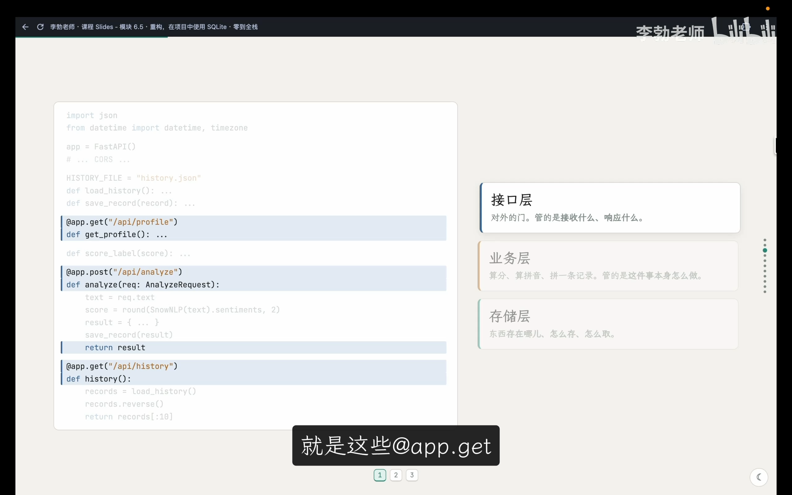
📷 main.py三层职责混杂分析
在 B 站中打开 (00:01:25)
二、重构的核心法则与“先搬家后装修”策略
(参考时间: 03:00 - 08:30)
1. 重构的严谨定义与唯一标尺
软件工程领域对代码重构（Refactoring）有着严格的定义：
“重构是在不改变软件系统‘外部可观察行为’的前提下，改善其内部结构的高级技术。”
重构的核心纪律是：只挪位置，不改行为。重构前后，系统接收相同的输入，必须产生绝对相同的输出。这一原则为重构提供了天然的验收标尺：重构完毕后运行测试，但凡结果有一丝一毫不同，就证明重构出现了偏差。
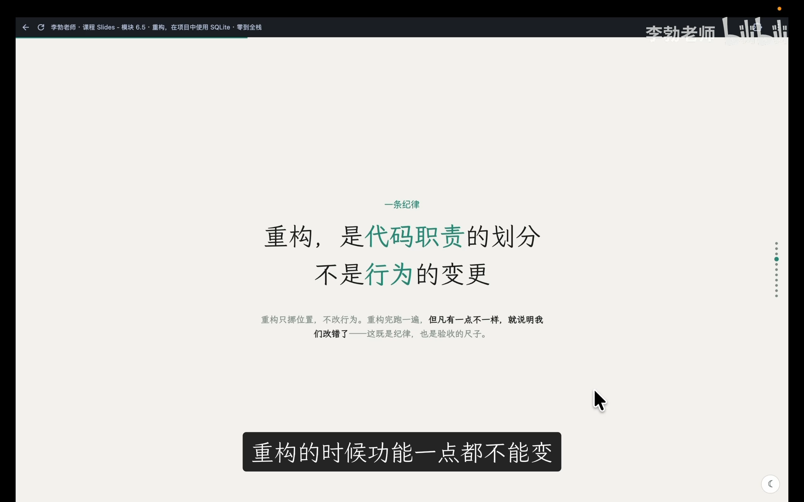
📷 重构核心原则：只挪位置不改行为
在 B 站中打开 (00:03:45)
2. 为什么新建的文件命名为 storage.py？
我们将拆分出的存储层模块命名为 storage.py，而不是 sqlite.py 或 db.py。
- 依据职责命名，而非依据实现命名：这一层的核心职责是“提供存储能力（Storage）”，其实现介质今天可以是本地 JSON，明天可以是 SQLite，未来还可以是云端 PostgreSQL。
- 调用方接口稳定：外部接口始终调用 save_record() 与 get_history()，无论底层物理介质如何翻天覆地，上层消费方无需感知任何名称变更。
flowchart LR
A[上层业务与接口: main.py] -->|语义化调用| B["统一存储契约: storage.py<br/>save_record() / get_history()"]
B -.->|阶段一| C[底层实现 A: JSON 文件]
B -.->|阶段二| D[底层实现 B: SQLite 数据库]
B -.->|未来扩展| E[底层实现 C: PostgreSQL / 云存储]
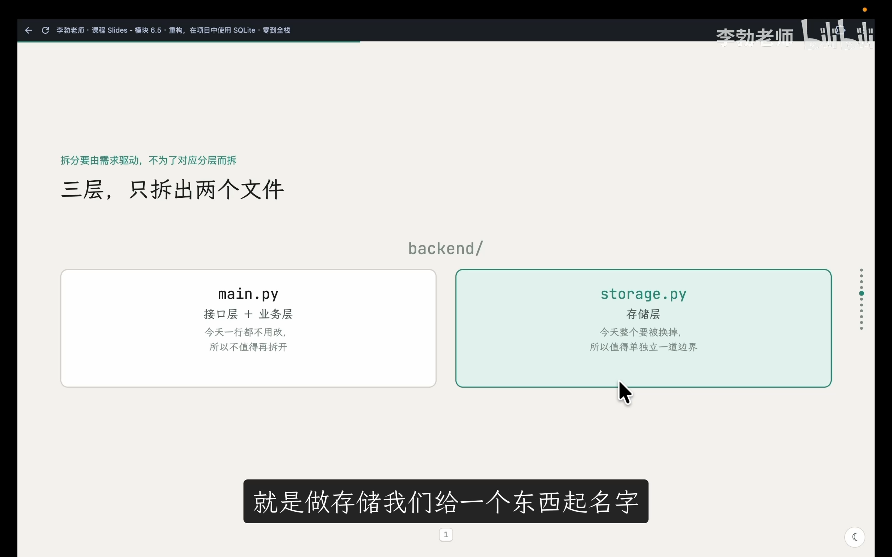
📷 存储层模块设计与职责命名逻辑
在 B 站中打开 (00:06:30)
3. “先搬家、后装修”两阶段策略
许多开发者习惯“边搬文件、边改写为 SQL”，但这往往会导致灾难性的调试泥潭： - “搬坏了”：导入路径错误、函数作用域丢失、少拷了一行常量。 - “改坏了”：SQL 语法报错、数据类型不匹配、事务未提交。
如果两件事混在一起，一旦系统报错，我们将无法判断究竟是文件拆分导致还是数据库驱动导致，唯一的“行为不变”验证标尺瞬间失效。因此，工程上的稳健策略是两步走：
1. 第一阶段（搬家）：把 JSON 存储代码原封不动搬入 storage.py，保持功能 100% 不变，验证通过后形成一个独立的 Git 提交。
2. 第二阶段（装修）：将 storage.py 内部彻底替换为 SQLite 实现，此时 main.py 几乎无需任何改动。
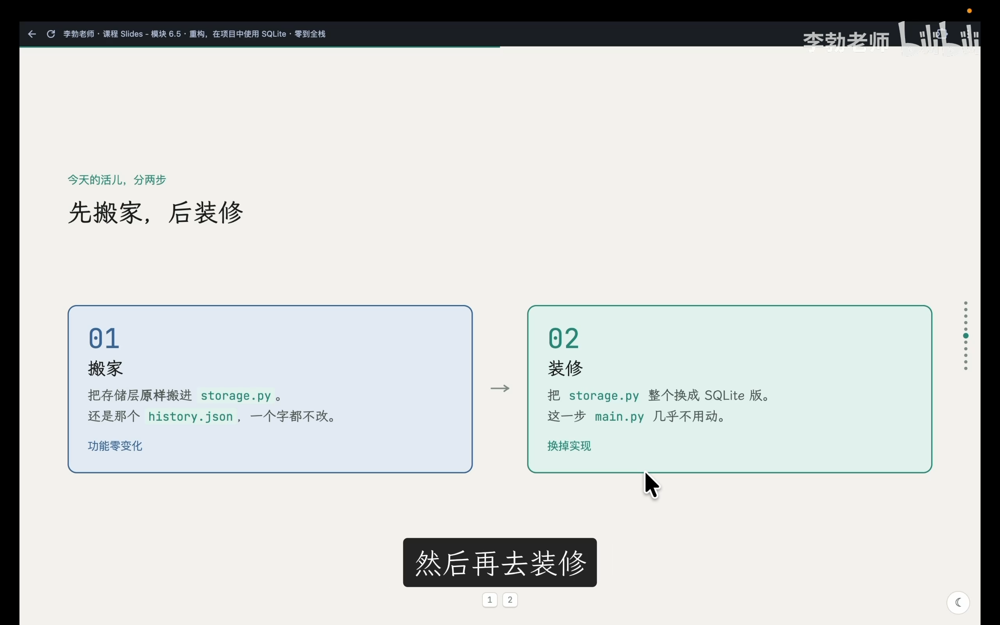
📷 两阶段工程策略：先搬家后装修
在 B 站中打开 (00:07:40)
三、第一阶段（搬家）：抽离 storage.py 存储模块
(参考时间: 08:30 - 16:00)
1. 新建 backend/storage.py 并迁入文件存储代码
在 backend/ 目录下创建 storage.py，将原本混杂在 main.py 中的存储相关资产完整迁移过来：
# backend/storage.py (第一阶段: 原样搬迁版)
import json
from pathlib import Path
# 持久化数据文件路径常量
HISTORY_FILE = Path(__file__).parent / "history.json"
def load_history():
"""读取并反序列化完整的历史记录列表"""
if not HISTORY_FILE.exists():
return []
try:
with open(HISTORY_FILE, "r", encoding="utf-8") as f:
return json.load(f)
except Exception:
return []
def save_record(record: dict):
"""追加写入单条分析记录"""
history = load_history()
history.append(record)
with open(HISTORY_FILE, "w", encoding="utf-8") as f:
json.dump(history, f, ensure_ascii=False, indent=2)
def get_history():
"""获取格式化后的最近历史记录列表"""
records = load_history()
records.reverse() # 逆序排布，最新的排在最前
return records[:2] # 原接口中内嵌的切片逻辑
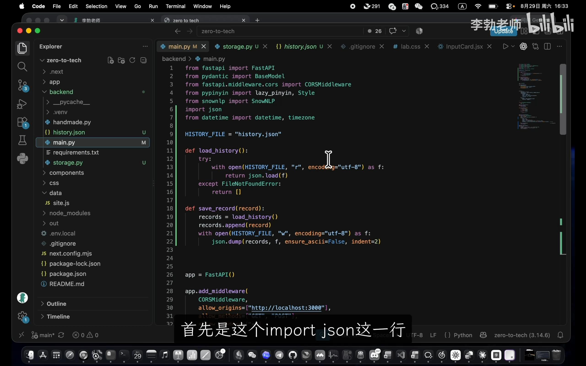
📷 storage.py原样迁入存储逻辑
在 B 站中打开 (00:09:35)
2. 净化 main.py：仅引入存储接口
在 backend/main.py 中移除 import json 和底层读写逻辑，通过模块导入消费存储能力：
# backend/main.py 顶部引入
from storage import save_record, get_history
# /api/history 路由函数被大幅精炼
@app.get("/api/history")
def read_history():
return get_history()
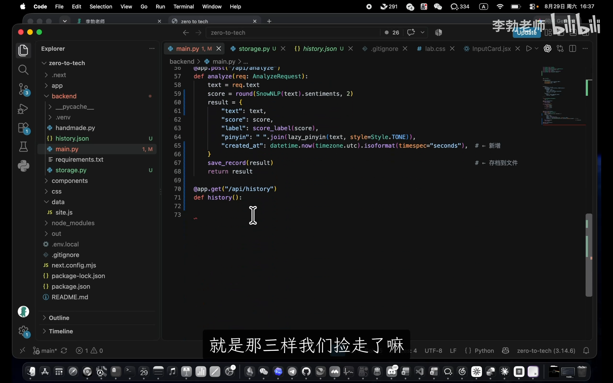
📷 main.py精炼后仅保留接口层职责
在 B 站中打开 (00:11:45)
3. 第一阶段验证：外部行为完全一致
重启 FastAPI 后端服务（避免热更新未捕获模块新增）：
1. 在前端页面输入并提交测试文本：“生活没有标准答案，但每一天都值得认真感受”。
2. 访问 http://localhost:8000/api/history 检查返回的 JSON 数据。
3. 查验本地 history.json 文件已成功写入新记录。
验证表明：系统功能与数据流与拆分前毫无二致，“搬家”成功！
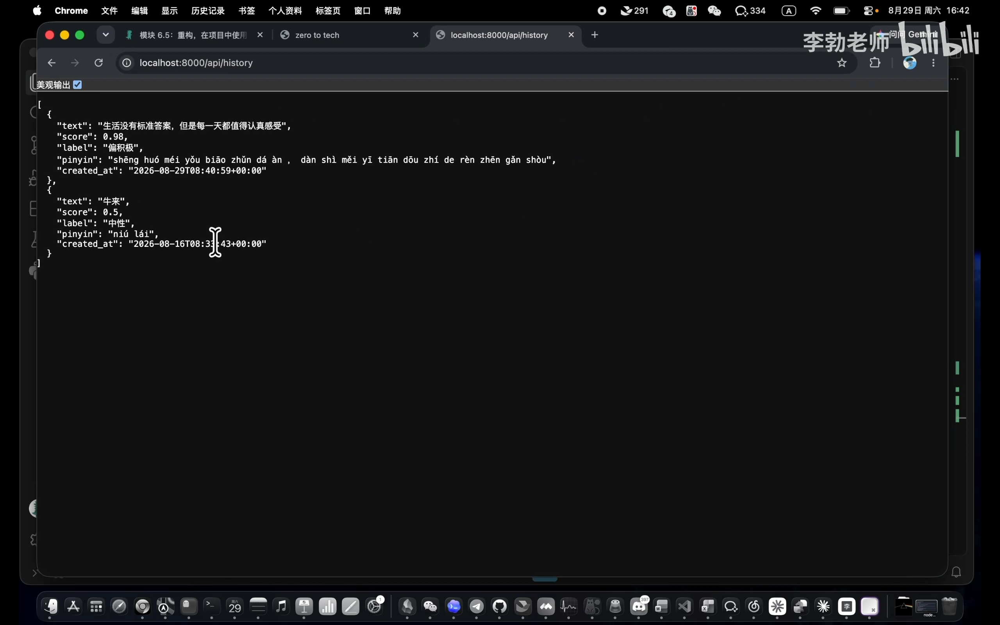
📷 搬迁后接口全链路验证
在 B 站中打开 (00:13:55)
四、深化架构边界：LIMIT 分页截断的决定权归属
(参考时间: 16:00 - 22:30)
在完成文件搬迁后，我们重新审视 storage.py 中的 get_history() 函数：
def get_history():
records = load_history()
records.reverse()
return records[:2] # 思考：这里的硬编码 [:2] 是否合理？
1. 动作权 vs 决定权
- 执行动作（Action）：从底层读取数据、逆序排布、只截取前 $N$ 条，这是存储层的职责（在 SQL 中对应
ORDER BY ... LIMIT ?）。 - 决定数量（Decision）：到底展示 2 条、10 条还是 50 条？这个决定权绝对不属于存储层！
- 存储层不感知客户端究竟是屏幕狭小的手机端、还是大屏桌面端；
- 存储层更不感知 UI 页面为历史记录区域分配了多大的展示高度。
如果把数量写死在存储层，未来移动端若需要展示 5 条记录，就不得不去修改底层的 storage.py。
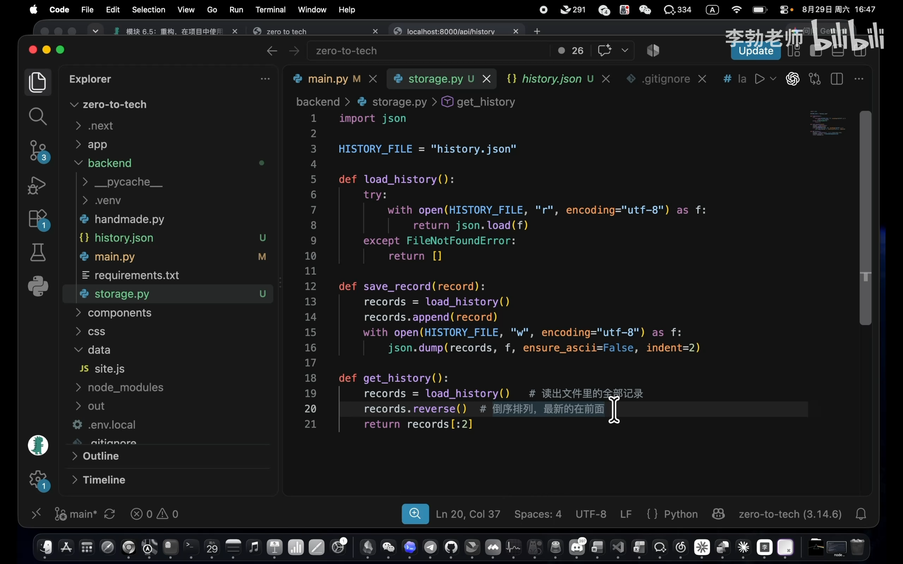
📷 硬编码截断数量的职责归属审视
在 B 站中打开 (00:17:35)
2. 控制反转：将决定权交还调用方
重构方案是：为 get_history() 引入显式参数 limit: int，存储层只执行命令，数量由上层调用者裁定：
# backend/storage.py
def get_history(limit: int):
"""存储层仅负责根据传入的 limit 参数执行截断"""
records = load_history()
records.reverse()
return records[:limit]
# backend/main.py
@app.get("/api/history")
def read_history():
"""接口层作为调用方，明确指定业务所需的数据量"""
return get_history(limit=10)
通过这一调整，我们理顺了组件间的职责契约，为下一步将切片动作映射到 SQL LIMIT 语句铺平了道路。
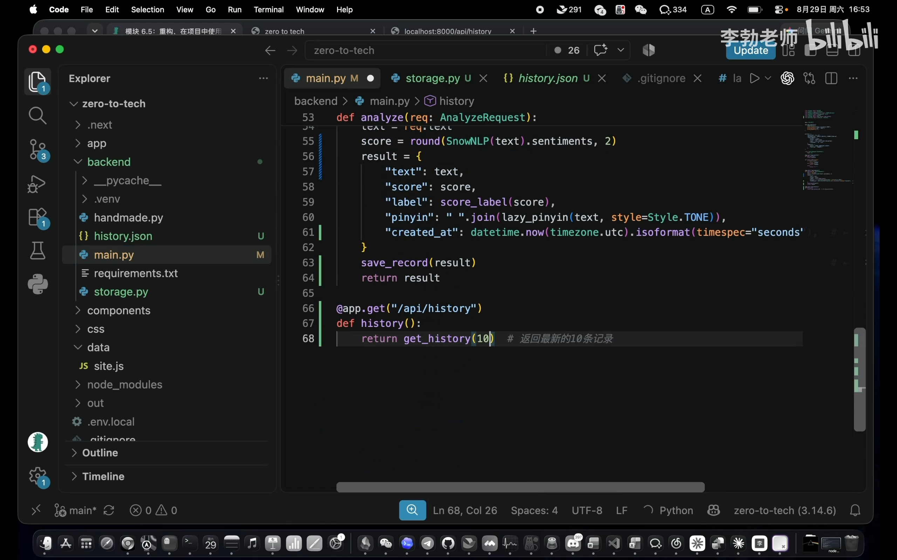
📷 为get_history引入limit参数完成解耦
在 B 站中打开 (00:20:25)
五、第二阶段（装修）：storage.py 全面接入 SQLite
(参考时间: 22:30 - 31:30)
架构边界清晰后，我们正式执行第二阶段“装修”，在保持对外函数签名不变的前提下，将 backend/storage.py 的底层驱动完整切换为 SQLite。
classDiagram
class StorageModule {
+DB_FILE : Path
+get_conn() Connection
+init_db() void
+save_record(record: dict) void
+get_history(limit: int) list
}
note for StorageModule "对外公开契约保持稳定<br/>内部逻辑全量换血为 SQL 驱动"
六处关键改造规划如下：
1. 替换驱动库：移除 json，引入标准库 sqlite3。
2. 定义连接池辅助函数：封装 get_conn() 并注入 row_factory。
3. 实现幂等性建表：编写 init_db() 初始化 history 数据表。
4. 改造写入逻辑：在 save_record() 中使用参数化 INSERT 替换文件追加。
5. 改造读取逻辑：在 get_history() 中使用 ORDER BY ... LIMIT ? 单行 SQL 替换内存全量排序。
6. 清理废弃函数：安全移除已无调用方的 load_history()。
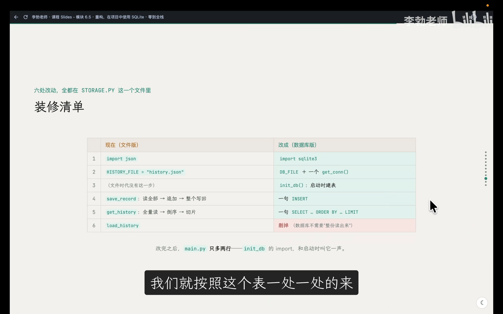
📷 storage.py六处改造方案总览
在 B 站中打开 (00:23:05)
1. 连接管理与字典化游标配置
import sqlite3
from pathlib import Path
DB_FILE = Path(__file__).parent / "history.db"
def get_conn():
"""建立数据库连接，并配置 Row 工厂以实现字典化按列名访问"""
conn = sqlite3.connect(DB_FILE)
conn.row_factory = sqlite3.Row # 关键：让查询结果以类似字典的对象返回
return conn
[!NOTE] 为什么必须配置
conn.row_factory = sqlite3.Row？ 默认情况下，SQLite 查询返回的是纯元组（如(1, '你好', 0.8)）。必须依靠下标访问。配置sqlite3.Row之后，既可以通过索引也可以通过列名row["text"]直接读取，极大提升了代码的可读性与向后兼容性。
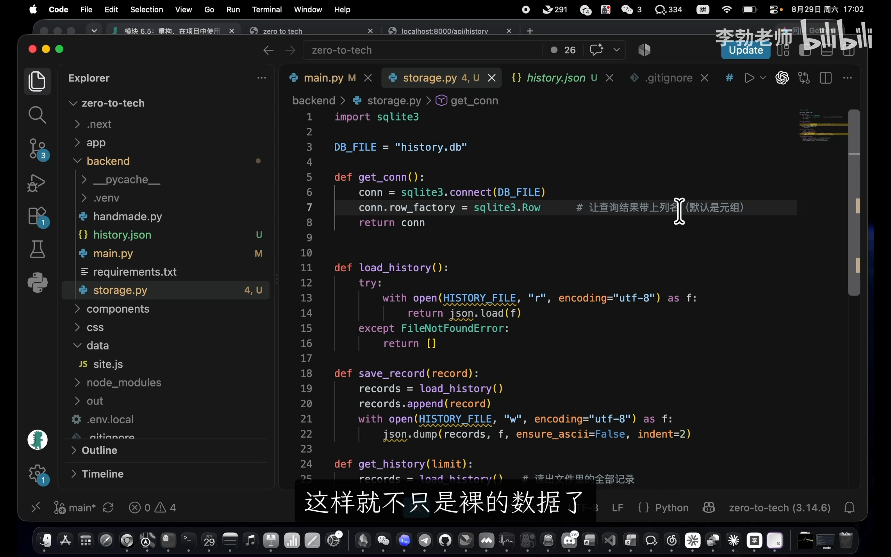
📷 get_conn与row_factory配置
在 B 站中打开 (00:24:20)
2. 幂等建表函数 init_db()
数据库不能像文件那样无序写入，必须在写入前确立 Schema。我们在应用代码中统一管理建表 DDL：
def init_db():
"""初始化数据库与数据表，具备幂等性 (IF NOT EXISTS)"""
conn = get_conn()
cur = conn.cursor()
cur.execute('''
CREATE TABLE IF NOT EXISTS history (
id INTEGER PRIMARY KEY AUTOINCREMENT,
text TEXT,
score REAL,
label TEXT,
pinyin TEXT,
created_at TEXT
)
''')
conn.commit()
conn.close()
[!TIP] 幂等性设计（Idempotence） 引入
IF NOT EXISTS关键字后，系统每次启动时执行建表语句均绝对安全：表不存在时创建，表已存在时静默跳过，避免重复建表抛出异常。
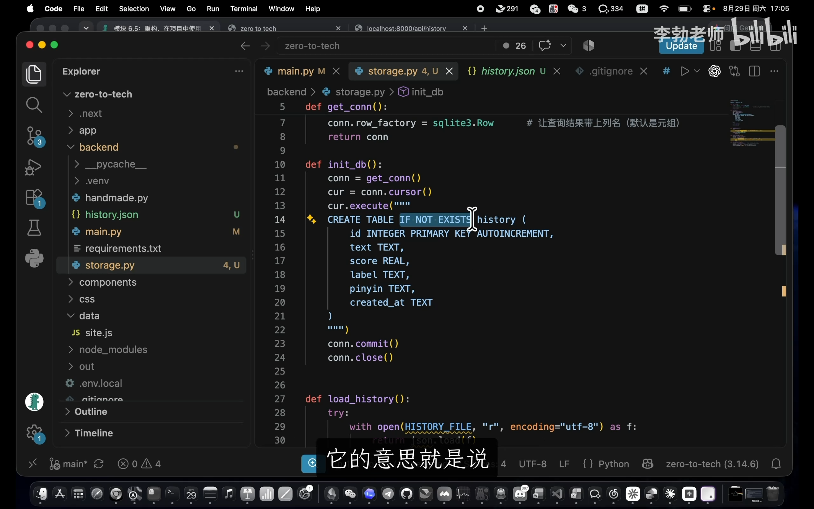
📷 init_db建表DDL语句详解
在 B 站中打开 (00:26:35)
3. 参数化插入记录 save_record()
def save_record(record: dict):
"""将文本分析记录安全插入数据库"""
conn = get_conn()
cur = conn.cursor()
# 严格采用 ? 占位符传递参数，杜绝 SQL 注入漏洞
cur.execute('''
INSERT INTO history (text, score, label, pinyin, created_at)
VALUES (?, ?, ?, ?, ?)
''', [
record.get("text"),
record.get("score"),
record.get("label"),
record.get("pinyin"),
record.get("created_at")
])
conn.commit()
conn.close()
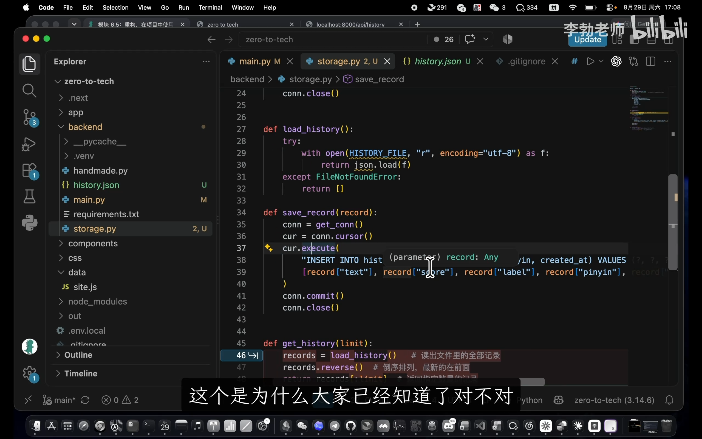
📷 参数化INSERT语句安全防注入
在 B 站中打开 (00:27:35)
4. 声明式高效查询 get_history()
def get_history(limit: int = 10):
"""利用 SQL 内核高效检索最新的 N 条历史记录"""
conn = get_conn()
cur = conn.cursor()
cur.execute('''
SELECT * FROM history
ORDER BY created_at DESC
LIMIT ?
''', [limit])
rows = cur.fetchall()
conn.close()
# 将 sqlite3.Row 映射为通用字典列表，适配 FastAPI JSON 序列化
return [dict(row) for row in rows]
对比旧版文件操作，这一行 SQL 将“全盘读取”、“内存倒排”、“切片截断”的所有繁琐计算全部下沉至 C 语言编写的 SQLite 高性能内核中，彻底摆脱了应用层 OOM 风险。
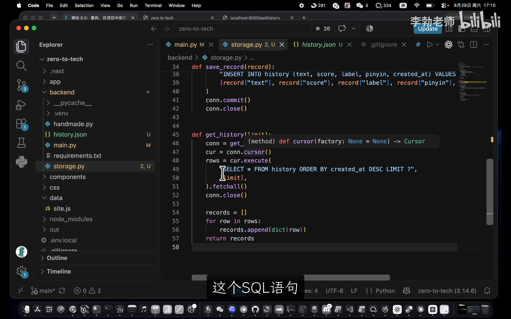
📷 get_history声明式SQL高效查询
在 B 站中打开 (00:29:20)
六、main.py 接入初始化与系统全链路联调
(参考时间: 31:30 - 35:10)
在 backend/main.py 中引入 init_db 并在应用全局启动时完成数据库表的就绪检查：
# backend/main.py
from fastapi import FastAPI
from storage import init_db, save_record, get_history
app = FastAPI()
# 服务启动时即刻初始化数据库 Schema
init_db()
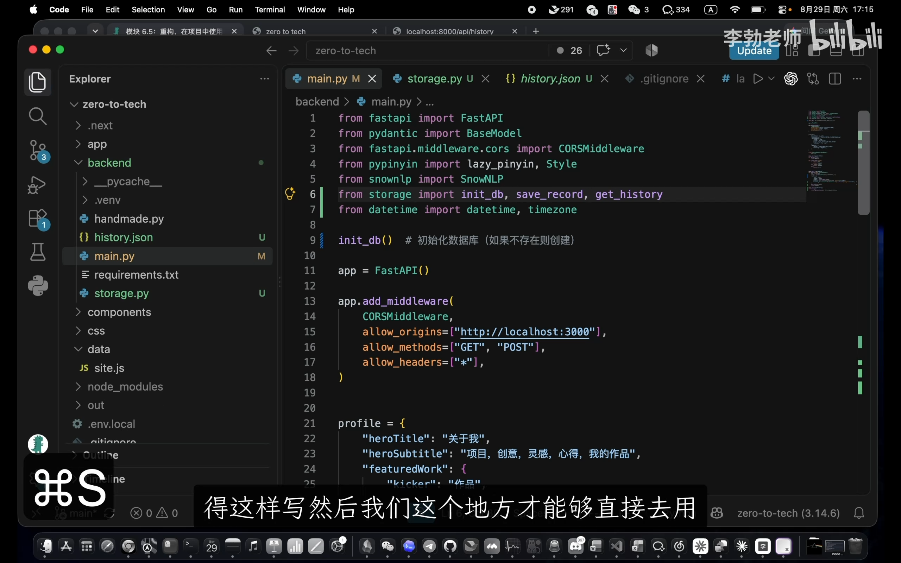
📷 main.py启动阶段调用init_db
在 B 站中打开 (00:32:10)
全链路联调与 GUI 核查
- 重启 FastAPI 服务，终端无任何异常报错。
- 在前端 Web 页面输入新文本：
“今晚月色真美”，点击提交。 - 接口顺利响应分析结果，下方历史记录区域即时呈现出最新记录。
- 使用 DB Browser for SQLite 打开新生成的
backend/history.db文件，切换到 Browse Data 视图，可以清晰看到数据库已经自动分配了自增主键id，数据整齐规整地存入表中。
[!NOTE] 契约向前兼容 虽然接口返回的记录中新增了
id字段，但在 RESTful API 设计中，向响应中增加非破坏性字段完全符合契约兼容原则，原有的前端应用依然平稳运行，零代码改动！
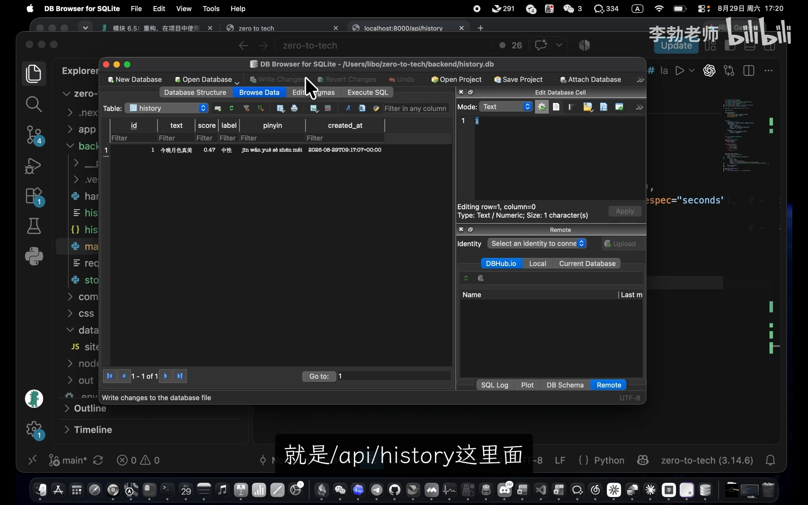
📷 DB Browser可视化核验history表数据与自增ID
在 B 站中打开 (00:34:00)
七、生产级工程规范：数据不进 Git 与老资产清理
(参考时间: 35:10 - 37:25)
数据库改造完成后，必须遵循专业团队的软件工程基准进行收尾。
1. 软件工程铁律：数据不进 Git 代码仓库
物理文件 backend/history.db 是服务在运行时动态产生的运行时状态数据（State/Data）。
- 源代码（Code）属于版本控制的资产；
- 数据（Data）具有环境隔离性（开发、测试、生产各自拥有独立的真实数据），绝不能混入 Git 仓库中。
我们在项目根目录的 .gitignore 中追加一行规则：
# 忽略 SQLite 物理数据库文件
backend/*.db
backend/*.sqlite3
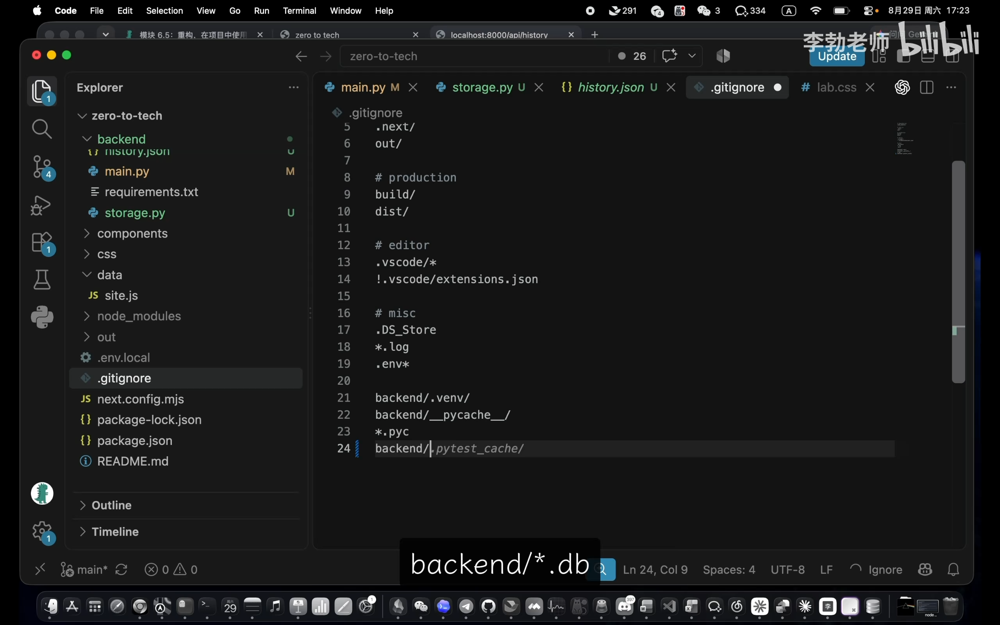
📷 gitignore配置数据库排除规则
在 B 站中打开 (00:36:00)
2. 废弃文件清理与历史数据迁移的思考
- 清理过渡资产：在项目中执行
git rm backend/history.json，将旧版文件存储资产安全下线。 - 工业界数据迁移（Data Migration）的现实要求：在本课程实验中，由于是尚未上线的开发原型，我们可以直接丢弃
history.json中的历史数据。但在生产环境中，数据迁移是一项极其严肃的核心工程，必须编写严格的迁移脚本（Migration Script），确保旧有成千上万条历史数据 100% 格式对齐并完整入库，容不得半点差池。
八、架构拓展视野：ORM（对象关系映射）核心机理
(参考时间: 37:25 - 39:50)
在大型现代后端项目中，很多团队并不推荐在 Python 逻辑中手写原生 SQL 字符串，而是广泛使用 ORM（Object-Relational Mapping，对象关系映射） 框架（如 FastAPI 官方力推的 SQLModel，以及 SQLAlchemy、Django ORM 等）。
flowchart LR
subgraph DevCode["开发者编写的面向对象代码"]
A["class History(SQLModel, table=True):<br/> id: int | None = Field(default=None, primary_key=True)<br/> text: str<br/> score: float"]
end
subgraph ORMLayer["ORM 框架层 (SQLModel / SQLAlchemy)"]
B["对象关系映射引擎"]
B -->|自动编译转换| C["SQL 语句生成器:<br/>INSERT INTO history ...<br/>SELECT * FROM history WHERE ..."]
end
subgraph DBLayer["底层数据库内核"]
D[("SQLite / PostgreSQL 存储引擎")]
end
A --> B
C -->|发送二进制协议| D
ORM 的核心价值在于： - 用面向对象编程（OOP）统一数据操作：开发者无需脱离 Python 语法上下文，直接实例化类、修改属性即可完成数据库变更。 - 自动适配多方言：编写一套 ORM 模型，底层无论是 SQLite、MySQL 还是 PostgreSQL，框架会自动翻译为对应的 SQL 方言。 - 但底层的本质依然是 SQL：数据库引擎永远只认识并执行原生 SQL。理解手写 SQL 的运行机制，是真正掌握并驾驭 ORM 的基石。
九、高频查询优化：在代码中声明式创建索引
(参考时间: 39:50 - 44:00)
在业务中，每次拉取历史记录都必须执行 ORDER BY created_at DESC。当数据表积攒到几十万条后，排序将成为严重的性能瓶颈。
1. 在 init_db() 中声明式引入索引
为践行“代码即基础设施”的规范，避免在生产环境中依赖运维人员通过 GUI 手动执行命令，我们在 init_db() 中同步追加索引创建 DDL：
def init_db():
conn = get_conn()
cur = conn.cursor()
# 1. 幂等创建数据表
cur.execute('''
CREATE TABLE IF NOT EXISTS history (
id INTEGER PRIMARY KEY AUTOINCREMENT,
text TEXT,
score REAL,
label TEXT,
pinyin TEXT,
created_at TEXT
)
''')
# 2. 幂等创建基于 created_at 的排序检索索引
cur.execute('''
CREATE INDEX IF NOT EXISTS idx_history_created_at
ON history(created_at)
''')
conn.commit()
conn.close()
按照业界命名惯例，索引通常命名为 idx_<表名>_<字段名>（如 idx_history_created_at）。
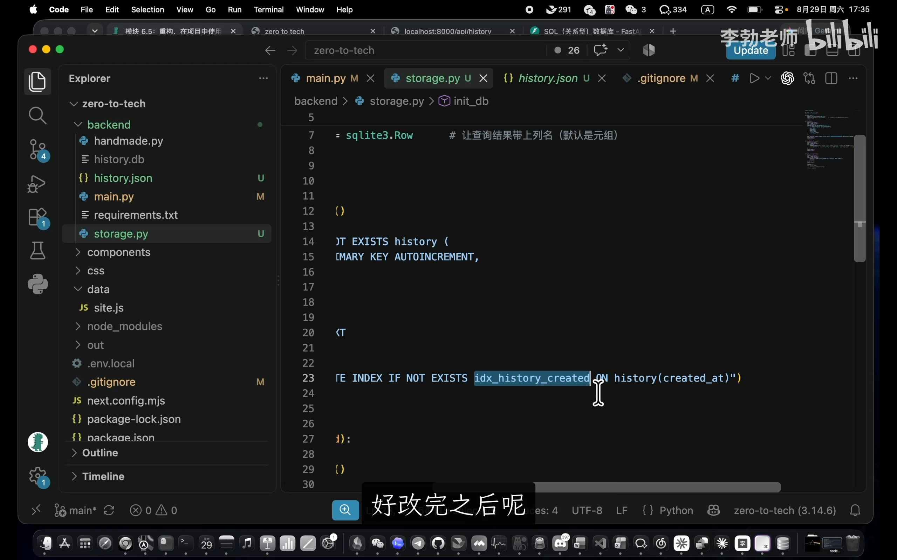
📷 init_db中声明式创建索引并在GUI中核实
在 B 站中打开 (00:42:15)
重启后端服务后，在 DB Browser for SQLite 界面刷新，可以清晰看到 history 表结构下方已成功挂载了 idx_history_created_at 索引节点。
十、总结与下一阶段演进：会话与状态隔离
(参考时间: 44:00 - 45:51)
本讲我们完成了一场极具工程教科书意义的系统重构：
1. 理顺了系统分层：将单一的 main.py 拆分为接口层与专职的 storage.py 存储模块，杜绝逻辑耦合。
2. 践行了重构准则：通过“先搬家、后装修”两阶段策略，以“外部行为不变”为标尺，稳健推进架构换血。
3. 拥抱了现代数据库：利用 SQLite、事务原子性、参数化防注入、字典化游标与索引机制，彻底革新了持久层体系。
现有系统的遗留痛点与下节预告
此时系统依然存在一个严重的业务缺陷：所有访客的历史记录全部混在同一张 history 表内，任何人请求 /api/history 看到的都是全站所有人的分析历史！
在接下来的第 29 讲（模块收官之作）中，我们将引入现代 Web 的核心机制——会话与状态（Cookie / Session），为每一位访问者颁发专属的身份标识，让每个人在页面上只能看到属于自己的分析足迹！